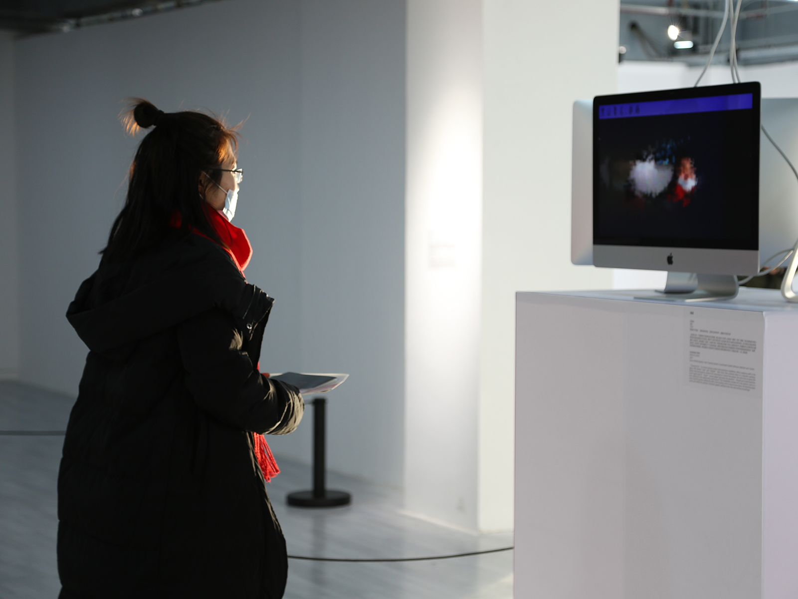

Chasing You! 追逐
August 2019
Overview

“Chasing You!” is an interactive installation with three individual parts. When audiences walk in front of/around the installation(s), the systems “see” and “track” their faces, and present the faces as a dynamic painting. Each sub-system equip with a face tracking unit to detect human faces and a display unit to present faces in visuals. This installation critiques and takes the initiative authority from human, and grants it to the computer program.With a machine has the right to “chase” human, this project tries to pose the question: Can machines own principal authority in the human-machine relationship.
* exhibited at Shanghai DUOLUN Museum of Modern Art